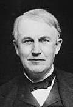
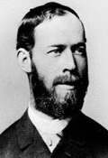

1. Introducción.
No cabe duda de que en el mundo de hoy en día la Electrónica juega un papel de vital importancia. En las comunicaciones, en el transporte, en el hogar, en el Instituto... encontramos infinidad de aplicaciones de esta rama de la Tecnología. Nada más que por ello, merece la pena su estudio.
La electricidad dio origen a la electrónica. La electrónica es la ciencia que estudia y diseña dispositivos relacionados con el comportamiento de los electrones en la materia.
No podemos hablar de historia de la electrónica hasta finales del S. XIX, momento en que se realizó un estudio cuidadoso de los electrones que rodean al núcleo atómico.
En 1883 Thomas Alva Edison observó que al calentar un material metálico se producía una emisión de electrones (efecto termoiónico). Se puede considerar que éste fue el origen de lo que actualmente conocemos como electrónica. No obstante, decir que todavía no se habían descubierto los electrones como partículas constituyentes de los átomos. Lo haría el físico inglés J.J. Thomson, en 1896.
En 1887, Heinrich Hertz observó que al circular una corriente alterna por un conductor, se crean ondas electromagnéticas a su alrededor, las cuales dependen de la corriente que circula. Estas ondas se propagan a la velocidad de la luz (300.000 km/s).
En 1897 Nikola Tesla construyó el primer transmisor de radio (tradicionalmente se ha atribuido este invento a Guillermo Marconi, pero desde 1943 se acepta que el invento es de Tesla).
Poco después, John Ambrose Fleming utilizó la válvula-diodo para la detección de las señales de radio.
En 1902 se inventa la célula fotoeléctrica, aunque su funcionamiento no será explicado hasta 1905 por Albert Einstein.
 En 1907, Lee De Forest inventa el triodo (o Audión, como él lo llamó) un dispositivo que permite amplificar señales eléctricas. Poco a poco van surgiendo diferentes componentes electrónicos, como el tetrodo o el pentodo.
En 1907, Lee De Forest inventa el triodo (o Audión, como él lo llamó) un dispositivo que permite amplificar señales eléctricas. Poco a poco van surgiendo diferentes componentes electrónicos, como el tetrodo o el pentodo.En 1920 se inventa un primer modelo de magnetrón, en 1937 se inventa el clistrón, y en 1940 el magnetrón de cavidad resonante. Ambos elementos son fundamentales en la fabricación del radar. Más adelante, se aplicarían al funcionamiento de los hornos microondas.
En 1938 se sentaron las bases teóricas para la fabricación de los elementos semiconductores. Desde este momento y gracias a la constante investigación, los nuevos descubrimientos no han dejado de sorprender a la Humanidad.

En 1947, un equipo de investigación compuesto por John Bardeen, Walter Brattain y William Shockley descubrían el transistor. Paradójicamente, no sabían para qué utilizarlo.

En 1958, Jack Saint Clair Kilby inventa el chip o circuito integrado, un soporte que contiene varios transistores. A partir de aquí, la evolución ha sido espectacular: el microprocesador, el ordenador, los smartphones, etc.